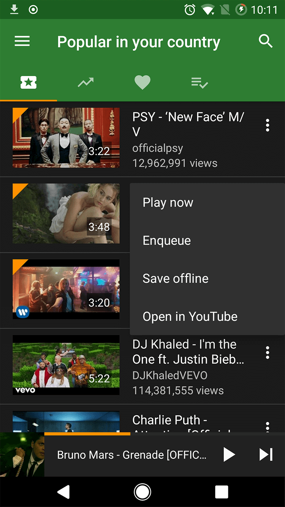
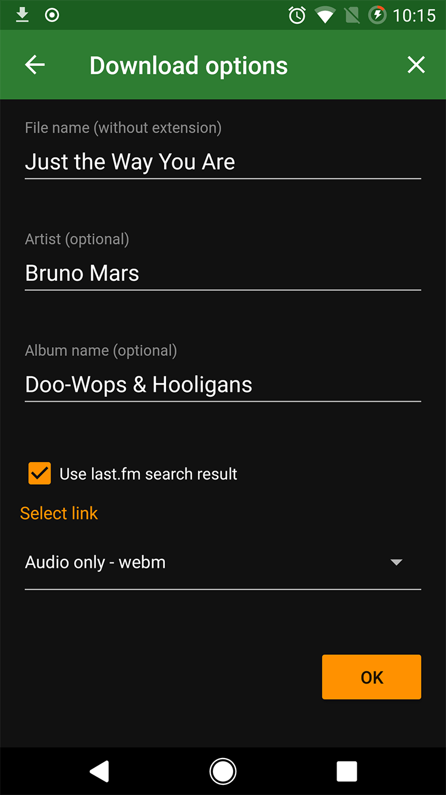
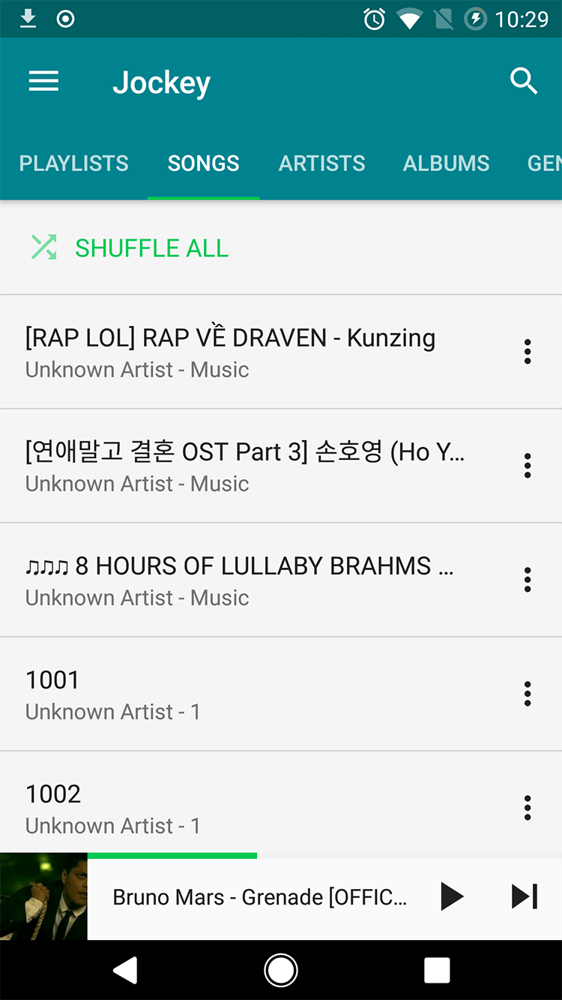
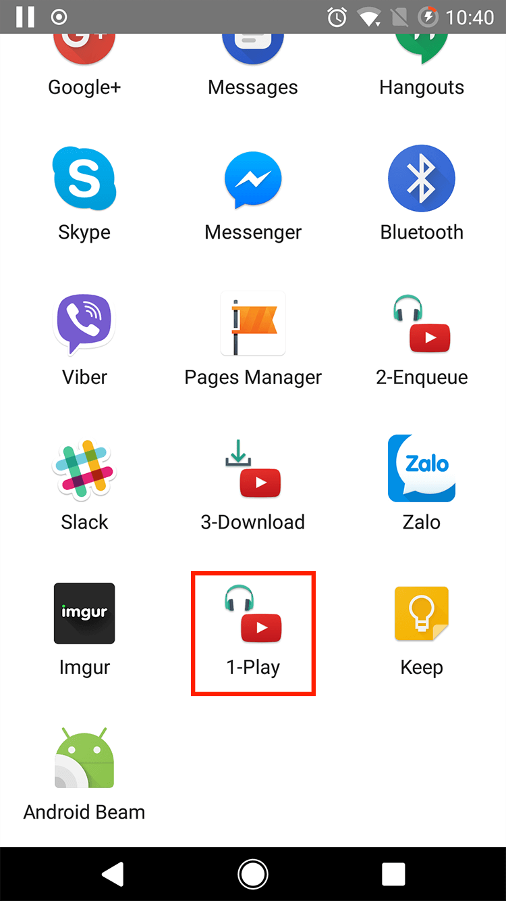

YMusic Android
Super convenient music app for you, enjoy music from YouTube with smallest consumed data! Click Download to get latest APK file.
-
What a great feature
YMusic play only audio of YouTube video in background, save up to 90% consumed data.
You will no longer worry about playing YouTube music with slow network connection, and spending a lot of data transfer cost every month. -
This one is even better
Easy to download YouTube video withever format you like, include MP3 format.
Moreover, YMusic can auto detect Artist and Album name of the video using last.fm service. It makes your music collection clearer and more convenient for searching. -
Jockey player
YMusic forked from Jockey open source project - a super powerful and lightweight music player.
• Customizable interface with 81 color combinations to choose from
• Last.fm integration for retrieving artist images and descriptions
• Smart Playlists with fully customizable rules
• Custom equalizers
• Gapless playback
• Home screen widgets
 -
Interact with YouTube app
Just click the Share button in YouTube app, you can easily navigate to YMusic to listen video in background or download for playing offline later.
